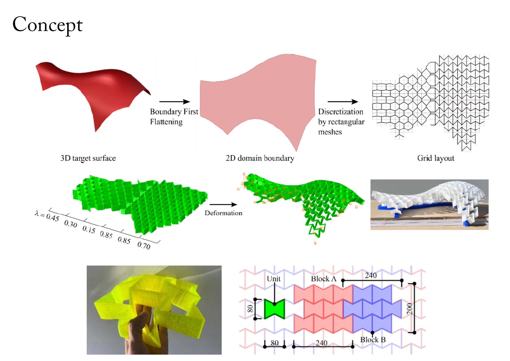
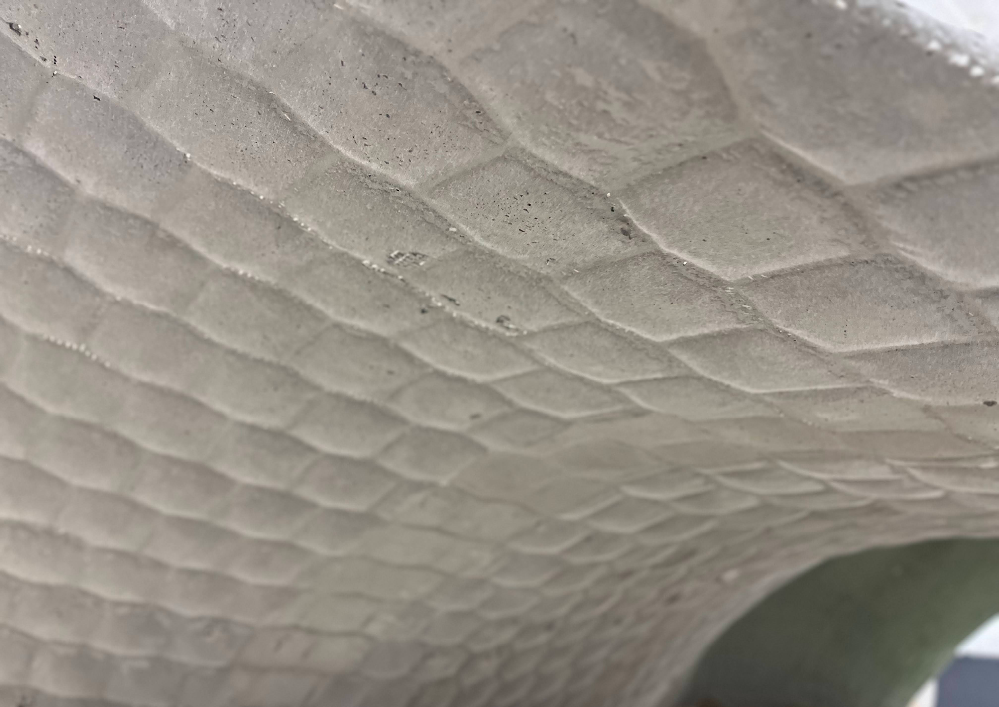

- 


- 
2025年3月に東京大学で開催されたCAADRIA2025において、メタマテリアル型枠×GRCによるパビリオンを製作・展示した。このパビリオンは、Eduardo TorrjaによるTachira Clubのシェル形状を1/15スケールで再現したものである。曲面形状によってメタマテリアルのパターンを変えることで、TPUを3Dプリントした平面パネルから立ち上げると目標形状を再現することができる。これにより、運搬性・再利用性の高い複曲面型枠工法を実現し、これにGRCを左官工法により打設することで、厚さ8mmの薄肉シェルを実現することに成功した。シェルの内面にはメタマテリアルのパターンが転写され、装飾的で柔らかな表情を持った曲面が生成されている。
project
ABAF － Auxetic Bending-Active Formwork Pavilion
term
Mar. 2024 - Mar. 2025
type
Pavilion
credit
Kazunori Nakayama, Hiroki Awaji, Yusuke Sakai, Ryo Yoshikawa, Tomoyuki Gondo, Toshiaki Kimura